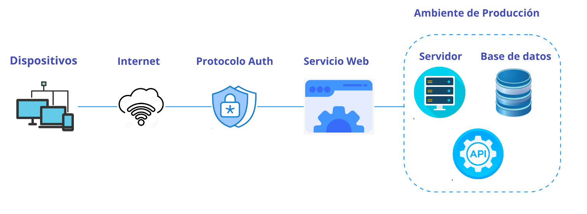

Arquitectura del Sistema#
Vista General#
Esta es la vista del sistema en forma general.
Vista Detalle#
El sistema está diseñado siguiendo una arquitectura de múltiples capas que implementa un patrón MVC (Modelo-Vista-Controlador) utilizando el framework Django. La arquitectura está optimizada para proporcionar alta escalabilidad, mantenibilidad y seguridad.
Componentes Principales

Detalle diagrama#
Capa de Presentación (Frontend)
Django Templates- Propósito:
Manejo de la interfaz de usuario y presentación de datos
- Tecnologías:
HTMLCSSJavaScript
- Funcionalidades:
Renderización de vistas dinámicas
Integración con el sistema de templates de Django
Gestión de formularios y validación client-side
Presentación de datos al usuario final
Capa de Servidor Web
Nginx- Propósito:
Servidor web y proxy inverso
- Funcionalidades:
Manejo de solicitudes
HTTP/HTTPSBalanceo de carga
Caché de contenido estático
Terminación
SSL/TLSProtección contra ataques DDoS
GunicornPropósito: Servidor
WSGI(Web Server Gateway Interface)- Funcionalidades:
Gestión de procesos de trabajo (
workers)Manejo de conexiones concurrentes
Interfaz entre Nginx y la aplicación Django
Optimización del rendimiento de la aplicación
Capa de Aplicación (Backend)
Aplicación Django- Propósito:
Núcleo de la lógica de negocio
- Funcionalidades:
Gestión de rutas (
URLs)Controladores (
views)Middleware
Autenticación y autorización
Manejo de sesiones
API REST- Propósito:
Interfaz de programación de aplicaciones
- Tecnología:
Django REST Framework
- Funcionalidades:
Endpoints RESTful
Serialización de datos
Autenticación de API
Documentación automática
Versionado de API
Django ORM- Propósito:
Capa de abstracción para acceso a datos
- Funcionalidades:
Mapeo objeto-relacional
Gestión de migraciones
Validación de datos
Consultas optimizadas
Caché de consultas
Capa de Datos
MySQL- Propósito:
Sistema de gestión de base de datos relacional
- Funcionalidades:
Almacenamiento persistente de datos
Integridad referencial
Backup y recuperación
Índices y optimización de consultas
Flujo de Datos- Flujo de Solicitud:
El usuario interactúa con la interfaz en
Django TemplatesLa solicitud es recibida por Nginx
Nginx direcciona la solicitud a Gunicorn
Gunicorn procesa la solicitud y la pasa a
Django
- Procesamiento en
Django: La aplicación Django procesa la solicitud
Si es necesario, se comunica con la
API RESTEl
ORMgestiona las operaciones de base de datosLos datos son serializados/deserializados según sea necesario
- Procesamiento en
- Flujo de Respuesta:
Django genera la respuesta
La respuesta pasa por Gunicorn
Nginx envía la respuesta al cliente
Los templates renderizan la información al usuario
- Consideraciones de Seguridad
Implementación de
HTTPSa través deNginxAutenticación y autorización en múltiples niveles
Protección contra ataques comunes (
XSS,CSRF,SQL Injection)Sanitización de datos en todas las capas
Logs
- Escalabilidad y Rendimiento
Nginxproporciona capacidad de balanceo de cargaGunicornpermite múltiples workers para procesamiento paraleloOptimización de consultas a través del
ORMÍndices y optimización de base de datos
- Mantenimiento y Monitoreo
Logs centralizados para todas las capas
Monitoreo de rendimiento de la aplicación
Backup y recuperación de datos
Gestión de versiones y migraciones
Documentación de
APIy código